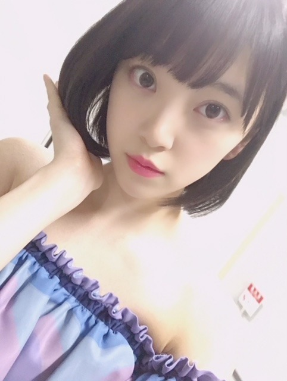
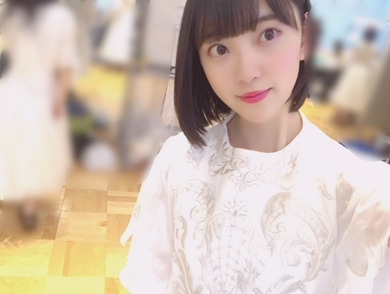

2018/0702Mon玉子って白いよね？
ちょっとだけ日焼けをして
しょんぼり気分です。笑
肌白いね！って言っていただける
事が凄く嬉しかったので
悔しいなぁ。
美白ケア頑張ります☺︎

21枚目シングル
選抜、フロントに選んでいただきました！
いつも応援してくださる皆さんの
おかげです。
ありがとうございます。
そして絢音！
おめでとう✨✨
ずっと夢見てました
一緒に楽しもうね！笑おうね！
私が今まで支えてもらった分
なんでも力になります。
3期からは
梅ちゃん れんかが初選抜！
おめでとう〜(^-^)
梅ちゃんはしっかり者で
スタイルが良いなぁって
いつも見てました。笑
れんかは甘えん坊だけど生意気で
かわいい妹みたいな存在！
よろしくね♪
色んなポジションを経験させて
いただけて本当に嬉しいです。
そして、この場所が今の私の場所。
そこで最大限に輝けるよう
私らしく頑張ります！
今年の夏も乃木坂46を
よろしくお願いします。

明日は(予定なので時間変更があるかもですが)
20:00〜
showroom のぎおびの配信をします。
見てね〜！
久しぶりのshowroom楽しみ♪
では☺︎
2018/07/02 17:30
コメント(548)
未央奈~ こんにちは
ブログの更新ありがとうございます。
２１枚目シングル、フロント入りおめでとうございます。
そして、今回何より、あーちゃんが念願の選抜入り、本当にうれしく思います。「私が今まで支えてもらった分」というところを読んで、涙が出てきました。未央奈が今日（こんにち）、こうして活動していられるのもあーちゃんがいてくれたからと言ってもけっして過言ではありません。あーちゃんの夢が叶って、居心地のいいところにできるかどうかはホント未央奈にかかってますから‥‥。
そして、最年少・れんたんのことも‥‥、先輩としてよろしくお願いしますね。
もちろん、また握手会でお会いできること、楽しみにしております。
夏場は体力勝負です。くれぐれも体調管理には気をつけてくださいね。まずは、バスラの大成功、お祈りしております。
ブログの更新ありがとうございます。
２１枚目シングル、フロント入りおめでとうございます。
そして、今回何より、あーちゃんが念願の選抜入り、本当にうれしく思います。「私が今まで支えてもらった分」というところを読んで、涙が出てきました。未央奈が今日（こんにち）、こうして活動していられるのもあーちゃんがいてくれたからと言ってもけっして過言ではありません。あーちゃんの夢が叶って、居心地のいいところにできるかどうかはホント未央奈にかかってますから‥‥。
そして、最年少・れんたんのことも‥‥、先輩としてよろしくお願いしますね。
もちろん、また握手会でお会いできること、楽しみにしております。
夏場は体力勝負です。くれぐれも体調管理には気をつけてくださいね。まずは、バスラの大成功、お祈りしております。
引き続きの一列目、おめでとう♪
二期生から絢音ちゃん選抜入り、嬉しいね(･ω･｡)
一緒に頑張れ、みおな
二期生から絢音ちゃん選抜入り、嬉しいね(･ω･｡)
一緒に頑張れ、みおな
のぎおび楽しみだ！！
絢音ちゃんの選抜も嬉しいね！僕は全ツも初めて行けるし楽しみが沢山な贅沢を味わわせてもらってます笑！
輝いてる、堀さんがより輝くのを見れるのが楽しみです！体調に気をつけて頑張ろう！
絢音ちゃんの選抜も嬉しいね！僕は全ツも初めて行けるし楽しみが沢山な贅沢を味わわせてもらってます笑！
輝いてる、堀さんがより輝くのを見れるのが楽しみです！体調に気をつけて頑張ろう！
7月になっちゃったね。
堀ちゃんウィンクハンパなかったっす。
頑張れ。
堀ちゃんウィンクハンパなかったっす。
頑張れ。
フロントおめでとう！
21枚目も楽しみだな♪
明日もがんばりき～～
21枚目も楽しみだな♪
明日もがんばりき～～
フロントと乙
たまごの色はいろいろ？
違いがあっていいんじゃない？
体調に気を付けて
んじゃねー
たまごの色はいろいろ？
違いがあっていいんじゃない？
体調に気を付けて
んじゃねー
みおな〜♪
こんばんは！
今日もお疲れさま
台風7号が近づいてるね〜
何事もなく過ぎ去りますように
昨日、乃木坂工事中観ました
まずは、選抜入りおめでとう！
今回は21人選抜、初選抜のメンバーが多数
そして飛鳥の久々の単独センター
結構、メンバーの変動が大きかったのでは
ないかと思います
みおなは今回、フロントという好位置
普段の努力の賜物だと思います
人生は、綱渡りと同じ
立ち止まって、しゃがみ込む時が、
一番バランスを崩して危ないんだ
これからも真っ直ぐ前だけを向いて
歩んでいこうね
夏曲は乃木坂の真骨頂
これからツアーに向けて盛り上げて
いきましょうヾ(*´∀｀*)ﾉ゛
こんばんは！
今日もお疲れさま
台風7号が近づいてるね〜
何事もなく過ぎ去りますように
昨日、乃木坂工事中観ました
まずは、選抜入りおめでとう！
今回は21人選抜、初選抜のメンバーが多数
そして飛鳥の久々の単独センター
結構、メンバーの変動が大きかったのでは
ないかと思います
みおなは今回、フロントという好位置
普段の努力の賜物だと思います
人生は、綱渡りと同じ
立ち止まって、しゃがみ込む時が、
一番バランスを崩して危ないんだ
これからも真っ直ぐ前だけを向いて
歩んでいこうね
夏曲は乃木坂の真骨頂
これからツアーに向けて盛り上げて
いきましょうヾ(*´∀｀*)ﾉ゛
ここ最近の歌番組で絢音ちゃんが堀ちゃんと映ってるのを見ていたけど、それが今回は同じ選抜として選ばれたからもっと沢山一緒に歌ってるところを見られるわけだよね☆
絢音ちゃん、本当におめでとうございます！！
そして、堀ちゃんも勿論おめでとうございます！
堀ちゃんがフロントとして定着してるのは当たり前じゃないんだろうけど、こっちとしては当たり前だーー！！と言いたい、言わせてほしい☆
目の前には高い壁があるのもわかっているんです、でも打ち崩したい！！
堀ちゃんが駄目とか絶対ないし、力が足りていないか？って思うけど、やっぱり高くて崩すには硬いんだろうなって感じる先輩方ですね(>_<)
でも、打ち崩したい！！！
今は、この場所が自分の場所であり立ち位置だっていう、きちんと足元を見てる姿勢、凄く見倣いたいと思います☆
その言葉の中に秘めたる想いとかあると思うけど、しっかり受け止めてるところが尊敬です☆
俺は凄く負けず嫌いなところが悪い方に出ちゃうから、自分で自分を無理矢理納得させないと、現状はここが自分の立ち位置なんだって受け止められなくなっちゃうんだよね(>_<)
頭が固いって自分でも理解してるし、周りからも思われてる。
でも、それを少しでも柔らかくしようとはしてるんだよ(>_<)
初選抜のメンバーの支えになる堀ちゃん、頼もしい先輩であり、絢音ちゃんからすると頼もしい同期だね☆
皆で最高の夏にしましょう！！
そして、最高の21枚目シングルにしましょう！
次の握手会は21枚目シングルの10月、この間の振替分も今のところ10月に回す事になると思うので、宜しくお願いします☆
バスラ、全国ツアーも宜しくお願いします☆
慶次郎でした。
絢音ちゃん、本当におめでとうございます！！
そして、堀ちゃんも勿論おめでとうございます！
堀ちゃんがフロントとして定着してるのは当たり前じゃないんだろうけど、こっちとしては当たり前だーー！！と言いたい、言わせてほしい☆
目の前には高い壁があるのもわかっているんです、でも打ち崩したい！！
堀ちゃんが駄目とか絶対ないし、力が足りていないか？って思うけど、やっぱり高くて崩すには硬いんだろうなって感じる先輩方ですね(>_<)
でも、打ち崩したい！！！
今は、この場所が自分の場所であり立ち位置だっていう、きちんと足元を見てる姿勢、凄く見倣いたいと思います☆
その言葉の中に秘めたる想いとかあると思うけど、しっかり受け止めてるところが尊敬です☆
俺は凄く負けず嫌いなところが悪い方に出ちゃうから、自分で自分を無理矢理納得させないと、現状はここが自分の立ち位置なんだって受け止められなくなっちゃうんだよね(>_<)
頭が固いって自分でも理解してるし、周りからも思われてる。
でも、それを少しでも柔らかくしようとはしてるんだよ(>_<)
初選抜のメンバーの支えになる堀ちゃん、頼もしい先輩であり、絢音ちゃんからすると頼もしい同期だね☆
皆で最高の夏にしましょう！！
そして、最高の21枚目シングルにしましょう！
次の握手会は21枚目シングルの10月、この間の振替分も今のところ10月に回す事になると思うので、宜しくお願いします☆
バスラ、全国ツアーも宜しくお願いします☆
慶次郎でした。
未央奈ちゃん、こんばんは(^o^)/
先ずは21thシングル選抜&福神おめでとう( ＾∀＾)
もうすっかり選抜&福神入りの常連になってきましたね( ＾∀＾)
絢音ちゃんの初選抜入りも良かったね( ＾∀＾)
研究生の頃から地方組として一緒にホテルで寝泊まりしたり付き合いの長い二人だからこそ喜びもひとしおなんだろうな( ＾∀＾)
明日(今日)のSHOWROOM『のぎおび』楽しみにしてるよ( ＾∀＾)
先ずは21thシングル選抜&福神おめでとう( ＾∀＾)
もうすっかり選抜&福神入りの常連になってきましたね( ＾∀＾)
絢音ちゃんの初選抜入りも良かったね( ＾∀＾)
研究生の頃から地方組として一緒にホテルで寝泊まりしたり付き合いの長い二人だからこそ喜びもひとしおなんだろうな( ＾∀＾)
明日(今日)のSHOWROOM『のぎおび』楽しみにしてるよ( ＾∀＾)
堀ちゃんブログありがとー。
フロントメンバーおめでとうございます
絢音ちゃんの初選抜もとても嬉しいですね
フロントメンバーおめでとうございます
絢音ちゃんの初選抜もとても嬉しいですね
21枚目シングル、選抜&フロントおめでとう。
自分のポジションに責任持って、しっかり頑張ってネッ。
絢音ちゃんも初選抜おめでとう。仲良しの絢音ちゃんと一緒にお互いに頑張って行こうネッ。
自分のポジションに責任持って、しっかり頑張ってネッ。
絢音ちゃんも初選抜おめでとう。仲良しの絢音ちゃんと一緒にお互いに頑張って行こうネッ。
みおたん、お疲れ様です！
センターを期待していたけど、
残念でした！
でも安定のフロントだから、
たくさん映るし嬉しいな！
それと、あーちゃんが初選抜、
三列目センターとめでたいね！
頑張ってもらいたいね！
そして、バースデーライブ楽しみだね！
シンクロニシティ！
雨が降りませんように祈ってます！
それでは健康第一で！
信州のミッキイでした！
センターを期待していたけど、
残念でした！
でも安定のフロントだから、
たくさん映るし嬉しいな！
それと、あーちゃんが初選抜、
三列目センターとめでたいね！
頑張ってもらいたいね！
そして、バースデーライブ楽しみだね！
シンクロニシティ！
雨が降りませんように祈ってます！
それでは健康第一で！
信州のミッキイでした！
堀さん、おはようございます。
21stシングルの選抜メンバー入りとフロントポジションに、まずは祝福の言葉を贈ります。おめでとう！
今回も三期生から岩本さんと梅澤さんが初選抜。そして何より喜ばしいのが鈴木さんの選抜入り。最近またとみに力をつけてきた姿をずっと観ていましたので、絢音さんの喜ぶ姿が嬉しかったです。
新たな陣容で臨む夏シングル。真夏の全国ツアーでも披露されるのかな。楽しみにしていますので堀さんもがんばってください。応援しています。
ではでは。またコメントいたします。
さらばだ、また会おう（気球に乗って去りぬ〜）
21stシングルの選抜メンバー入りとフロントポジションに、まずは祝福の言葉を贈ります。おめでとう！
今回も三期生から岩本さんと梅澤さんが初選抜。そして何より喜ばしいのが鈴木さんの選抜入り。最近またとみに力をつけてきた姿をずっと観ていましたので、絢音さんの喜ぶ姿が嬉しかったです。
新たな陣容で臨む夏シングル。真夏の全国ツアーでも披露されるのかな。楽しみにしていますので堀さんもがんばってください。応援しています。
ではでは。またコメントいたします。
さらばだ、また会おう（気球に乗って去りぬ〜）
絢音ちゃんと一緒に頑張ってね！！！
未央奈、暑中見舞い申し上げます❗️
更新ありがとう。夏バテしてない？
日焼けは炎天下でリハーサルが原因ナノ？いよいよ今週金曜日から6thバスラが始まりますね…
野球場とラグビー場で同時スタートのシンクロコンサート。気になって仕方がないので一般発売の7.1の正午ジャストから35分間挑戦したけどダメでした。
21枚目シングルフロントの6番おめでとう 。正直いうと、飛鳥ちゃんとのダブルセンタ－じゃないかと淡い期待抱いていたのですが外れましたね。しかし、同期・同部屋で苦楽を共にしたソウルメイトの絢音ちゃんが選抜に選ばれたことはとても良いこと。「恩返しがしたい」というコメントを聞いても嬉しそうで彼女の努力・経験・ひととなりがグループに新たなエッセンスを与えてくれることでしょう。
どんなサマーソングになるのか解禁日が待ち遠しい！！！
絢音ちゃんも随分印象が変わりましたね。この前のレコメンの君の代打でも感情豊かに喋っていたし、いつかの乃木中の彼女のリアクションを引き出す回の時とはまるで別人でした。きっと今の感じが普段の彼女なのでしょうね…… 二人でこれからいっぱい良い経験をして下さい。
ところで、サッカー日本代表後半早々に２ｰ０としたんだけど、逆転負けで敗退です。本当に悔しい 。２ゴールともスーパーゴール、ビューティフルゴールだっただけに気持ちの整理に時間がかかりそうです〰️
これで未央奈他メンバーもバスラに集中できますよね。当日は雨模様のようですけど、新聞で蘭世が書いていたように雨☔️が降ってこそのバスラなのかもしれません……
８日からのLIVE向けてけてリハーサル、個人練習に追い込みをかけていることでしょう。体調管理もしっかりして初日を迎えて下さい。成功を祈っています‼️自分は行けませんが、名古屋の最終日に参戦しますので宜しく 。あっ、この間サイリュウム届きました✨。次はタオルマフラーです。
PS.サムライブルーのこと気にかけてくれありがとう。興奮状態が続いていて眠くても眠れそうにもありません➰ まだまだ不規則な生活が続きそうです～ Bye,Now!
更新ありがとう。夏バテしてない？
日焼けは炎天下でリハーサルが原因ナノ？いよいよ今週金曜日から6thバスラが始まりますね…
野球場とラグビー場で同時スタートのシンクロコンサート。気になって仕方がないので一般発売の7.1の正午ジャストから35分間挑戦したけどダメでした。
21枚目シングルフロントの6番おめでとう 。正直いうと、飛鳥ちゃんとのダブルセンタ－じゃないかと淡い期待抱いていたのですが外れましたね。しかし、同期・同部屋で苦楽を共にしたソウルメイトの絢音ちゃんが選抜に選ばれたことはとても良いこと。「恩返しがしたい」というコメントを聞いても嬉しそうで彼女の努力・経験・ひととなりがグループに新たなエッセンスを与えてくれることでしょう。
どんなサマーソングになるのか解禁日が待ち遠しい！！！
絢音ちゃんも随分印象が変わりましたね。この前のレコメンの君の代打でも感情豊かに喋っていたし、いつかの乃木中の彼女のリアクションを引き出す回の時とはまるで別人でした。きっと今の感じが普段の彼女なのでしょうね…… 二人でこれからいっぱい良い経験をして下さい。
ところで、サッカー日本代表後半早々に２ｰ０としたんだけど、逆転負けで敗退です。本当に悔しい 。２ゴールともスーパーゴール、ビューティフルゴールだっただけに気持ちの整理に時間がかかりそうです〰️
これで未央奈他メンバーもバスラに集中できますよね。当日は雨模様のようですけど、新聞で蘭世が書いていたように雨☔️が降ってこそのバスラなのかもしれません……
８日からのLIVE向けてけてリハーサル、個人練習に追い込みをかけていることでしょう。体調管理もしっかりして初日を迎えて下さい。成功を祈っています‼️自分は行けませんが、名古屋の最終日に参戦しますので宜しく 。あっ、この間サイリュウム届きました✨。次はタオルマフラーです。
PS.サムライブルーのこと気にかけてくれありがとう。興奮状態が続いていて眠くても眠れそうにもありません➰ まだまだ不規則な生活が続きそうです～ Bye,Now!
フロントおめでとう♪＼(^o^)／
センターも、また見てみたいけど、
未央奈ちゃんは、
どのポジションに居ても
輝ける人だと思ってるから！(^_-)
バスラ3日間、行きますよ！
雨、降らないとイイねー。
センターも、また見てみたいけど、
未央奈ちゃんは、
どのポジションに居ても
輝ける人だと思ってるから！(^_-)
バスラ3日間、行きますよ！
雨、降らないとイイねー。
未央奈、おはよー(oﾟ□ﾟ)o
乃木中見ましたよ
堀ちゃん
21stシングルのフロント入り
おめでとう✨
どのポジションにいても
堀ちゃんは堀ちゃんらしく輝いてね。
そして
絢音ちゃんも選抜に入って嬉しいです☺️
これからあーちゃんとのコンビで
たくさん僕らを楽しませてくださいなー
絢音ちゃんホントおめでとうです
それと梅ちゃんと蓮加にもおめでとう✨
初選抜でいろいろ不安だと思うので
堀が３人のこと支えてやってあげてね。
生駒魂ですよ☺️
今回の曲は夏曲ってことなので
なんか明るく盛り上がりそうなのかな
早く聴くのが楽しみo(*ﾟ∀ﾟ*)o
今年の夏も
みんなで弾けちゃってください(笑)
僕らと一緒に熱くなりましょう✌️
初日の神宮参戦するね
よし、
楽しむぞ〜熱くなるぞ〜堀ちゃん推しぞ〜(笑)
あ、
今日のshawlroomもち見ます☺️
いやぜったいぜったい、のぎおび見るね✌️
7月に入って夏みたいな猛暑だけど..
負けずお互い頑張ろう
紫外線対策忘れるなヨー( ；∀；)
めさせ美白ケア
ファイトだでぇー(ｏ^-^)尸
堀いつもいつも更新ありがとね
最初のセクシー未央奈に一目惚れ(笑)
写真ありがとう❤️
ではでは
やば！遅刻しちゃう(笑)
未央奈またね(*^ｘ・)ノ~~~♪
乃木中見ましたよ
堀ちゃん
21stシングルのフロント入り
おめでとう✨
どのポジションにいても
堀ちゃんは堀ちゃんらしく輝いてね。
そして
絢音ちゃんも選抜に入って嬉しいです☺️
これからあーちゃんとのコンビで
たくさん僕らを楽しませてくださいなー
絢音ちゃんホントおめでとうです
それと梅ちゃんと蓮加にもおめでとう✨
初選抜でいろいろ不安だと思うので
堀が３人のこと支えてやってあげてね。
生駒魂ですよ☺️
今回の曲は夏曲ってことなので
なんか明るく盛り上がりそうなのかな
早く聴くのが楽しみo(*ﾟ∀ﾟ*)o
今年の夏も
みんなで弾けちゃってください(笑)
僕らと一緒に熱くなりましょう✌️
初日の神宮参戦するね
よし、
楽しむぞ〜熱くなるぞ〜堀ちゃん推しぞ〜(笑)
あ、
今日のshawlroomもち見ます☺️
いやぜったいぜったい、のぎおび見るね✌️
7月に入って夏みたいな猛暑だけど..
負けずお互い頑張ろう
紫外線対策忘れるなヨー( ；∀；)
めさせ美白ケア
ファイトだでぇー(ｏ^-^)尸
堀いつもいつも更新ありがとね
最初のセクシー未央奈に一目惚れ(笑)
写真ありがとう❤️
ではでは
やば！遅刻しちゃう(笑)
未央奈またね(*^ｘ・)ノ~~~♪
堀ちゃんフロントおめでとう！
今回のシングルも楽しみです！
堀ちゃんフロントおめでとう！
今回のシングルも楽しみです！
未央奈ちゃん！フロントおめでとう！なんか、いつの間にかフロント入りが当たり前みたいな感じになってるね。でも、その環境に甘えずに頑張ってね！未央奈ちゃんにこんなこと言わなくても出来るか。未央奈ちゃんはしっかりものだもんね。乃木坂46に「堀未央奈」っていう人物が入ってきて良かったって最近、つくづく思う。飛鳥ちゃんもだけど、未央奈ちゃんは卒業しないでほしい。卒業するのであれば、もう一回はセンターをやって欲しい。ずーーーっと応援してるからね！21stのMVすごく期待してるね！撮影頑張れ！
未央奈ちゃんありがとうございます‼頑張ります‼頑張って下さい。頑張った‼ありがとうございます
堀ちゃんおはよう！
や、絢音ちゃんの
初選抜、堀ちゃんも嬉しいだろうなと
おもってたよ！
楽しい夏の思い出作ってね！
神宮の2日目だけ行かせてもらいます！
や、絢音ちゃんの
初選抜、堀ちゃんも嬉しいだろうなと
おもってたよ！
楽しい夏の思い出作ってね！
神宮の2日目だけ行かせてもらいます！
選抜おめでとう
21枚目の振り付けとか頑張ってね
21枚目の振り付けとか頑張ってね
未央奈フロント&選抜おめでとう！
頑張ってね！
絢音ちゃん初選抜おめでとう！
未央奈の美白対策教えて欲しいです。
未央奈の握手会行けるように私勉強頑張ります！
未央奈の事ずーっと応援してます！
頑張ってね！
絢音ちゃん初選抜おめでとう！
未央奈の美白対策教えて欲しいです。
未央奈の握手会行けるように私勉強頑張ります！
未央奈の事ずーっと応援してます！
未央奈ちゃん、おはよう。
21枚目シングル、フロントおめでとう。ポジションがどこであっても変わらず応援しますね。
今日のshowroomも楽しみです。
暑い中、ライブのリハーサルなどで大変でしょうが、良い体調で過ごしてくださいね。
Birthday live には三日目に神宮球場で参加します、未央奈ちゃんとアイコンタクトできるようにタオルを掲げます。
乃木坂46と頑張ってるcuteでsmartな未央奈ちゃんを応援しています。
21枚目シングル、フロントおめでとう。ポジションがどこであっても変わらず応援しますね。
今日のshowroomも楽しみです。
暑い中、ライブのリハーサルなどで大変でしょうが、良い体調で過ごしてくださいね。
Birthday live には三日目に神宮球場で参加します、未央奈ちゃんとアイコンタクトできるようにタオルを掲げます。
乃木坂46と頑張ってるcuteでsmartな未央奈ちゃんを応援しています。
みおな、おはよう。
選抜入り、フロント、おめでとう。
次のシングルは、どんな曲なのか、MVはどんな感じになるのかな。
選抜入り、フロント、おめでとう。
次のシングルは、どんな曲なのか、MVはどんな感じになるのかな。
未央奈おはよう！
ブログ更新ありがとう！
そして21stシングル選抜入りおめでとう！
そしてそして6作連続福神5作連続フロント本当におめでとう！！未央奈はどの位置に行っても未央奈は未央奈っておもってるけどやっぱり前で見られる方が嬉しいしカメラにいっぱい抜かれる方が嬉しいからね本当にまたフロントで嬉しい！僕は何より未央奈は感謝を忘れない人だなって思うよ！ちゃんと皆さんのお陰で言えるところがスゴいなって思います！だからこそ未央奈を応援していて良かったし心から尊敬し周りにも自慢できるアイドルです！本当におめでとう！
そして絢音ちゃんも選抜入り！念願のすずほりコンビの選抜入りだから嬉しい！三期からも2人初選抜だし先輩として良い背中を見せられるといいね！あと、与田ちゃんとも初シンメだよね！堀与田シンメどんなものになるのかたのしみ！！今回のシングルも良い作品になるように願ってます！そしてこのシングルでツアーも回ると思うので盛り上げられるように張り切っていこーね！！
では今週はBIRTHDAYライブ！もちろんアメリカにいるので行けませんが気持ちは神宮と秩父宮にいるので僕も盛り上がっていくよ！！！最近リハーサルや撮影とかでかなり多忙な毎日になってると思うけどくれぐれも身体だけは壊さないように！自分の健康を第一に考えて活動してほしいです！それじゃあ今日も１日張り切っていこー！！じゃあまたねーー！
ブログ更新ありがとう！
そして21stシングル選抜入りおめでとう！
そしてそして6作連続福神5作連続フロント本当におめでとう！！未央奈はどの位置に行っても未央奈は未央奈っておもってるけどやっぱり前で見られる方が嬉しいしカメラにいっぱい抜かれる方が嬉しいからね本当にまたフロントで嬉しい！僕は何より未央奈は感謝を忘れない人だなって思うよ！ちゃんと皆さんのお陰で言えるところがスゴいなって思います！だからこそ未央奈を応援していて良かったし心から尊敬し周りにも自慢できるアイドルです！本当におめでとう！
そして絢音ちゃんも選抜入り！念願のすずほりコンビの選抜入りだから嬉しい！三期からも2人初選抜だし先輩として良い背中を見せられるといいね！あと、与田ちゃんとも初シンメだよね！堀与田シンメどんなものになるのかたのしみ！！今回のシングルも良い作品になるように願ってます！そしてこのシングルでツアーも回ると思うので盛り上げられるように張り切っていこーね！！
では今週はBIRTHDAYライブ！もちろんアメリカにいるので行けませんが気持ちは神宮と秩父宮にいるので僕も盛り上がっていくよ！！！最近リハーサルや撮影とかでかなり多忙な毎日になってると思うけどくれぐれも身体だけは壊さないように！自分の健康を第一に考えて活動してほしいです！それじゃあ今日も１日張り切っていこー！！じゃあまたねーー！
未央奈ちゃん更新ありがとー！
フロントおめでとう！！
どんなシングルになるのか楽しみでしょうがないです！！
いいシングルになりますよーに(^_^)
未央奈ちゃん頑張れ！！
フロントおめでとう！！
どんなシングルになるのか楽しみでしょうがないです！！
いいシングルになりますよーに(^_^)
未央奈ちゃん頑張れ！！
未央奈 おはよう！
未央奈は、透き通るほど美白だもね。 自分的には、卵じゃなくて、白兎かな。趣味と仕事で、真っ黒な自分が言うのもあれだけど。
21枚目 いーーーーーぱっい楽しんでね。化学反応楽しみにしてるよ！絢音ちゃんといっしょの夏。楽しもうよ！イッパイ笑おうよ！
今見える景色は、未央奈が前を向いて、一歩一歩前に踏み出し進んだ証。
未央奈の頑張り、努力 ちゃんと見てるよ。
雑音なんか、僕たちが掻き消すから。
だから、僕たちの女神でいてね。
弟達 可愛い！
未央奈は未央奈のままで、
最高の笑顔を！
未央奈は、透き通るほど美白だもね。 自分的には、卵じゃなくて、白兎かな。趣味と仕事で、真っ黒な自分が言うのもあれだけど。
21枚目 いーーーーーぱっい楽しんでね。化学反応楽しみにしてるよ！絢音ちゃんといっしょの夏。楽しもうよ！イッパイ笑おうよ！
今見える景色は、未央奈が前を向いて、一歩一歩前に踏み出し進んだ証。
未央奈の頑張り、努力 ちゃんと見てるよ。
雑音なんか、僕たちが掻き消すから。
だから、僕たちの女神でいてね。
弟達 可愛い！
未央奈は未央奈のままで、
最高の笑顔を！
更新ありがとう〜
21thフロント選抜おめでとう〜
絢音ちゃんも選抜されて良かったね、乃木坂46の集合写真を見るとほとんど絢音ちゃんの隣にいますよね、本当に仲が良すぎて姉妹みたいですよ〜
生き別れた姉妹ですか？笑笑
少し日焼けしちゃったんですね、美白ケア頑張ってますって言ってましたもんね、白玉みたいになるとも言ってましたね、諦めずにこれからも美白ケア頑張ってください！ 諦めたら試合終了ですよ笑笑
僕は、水泳部なので肌を白くしようと思っても出来なので、あまり黒くなりすぎないように頑張っているので、堀ちゃんもがんばろうヽ(｡ゝω・｡)ﾉ
梅ちゃんもれんたんも選抜入りますたね、梅ちゃんは真ん中でれんたんはその隣でしたね♪
梅ちゃん背が高いですよね〜僕が172cmなので、2cmしか変わらないんですよやばいです！笑笑れんたんは最年少で凄く元気で明るくて、こちらから見ても可愛い妹のような感じですね！
コメ読みお疲れ様で〜す★
またね〜
21thフロント選抜おめでとう〜
絢音ちゃんも選抜されて良かったね、乃木坂46の集合写真を見るとほとんど絢音ちゃんの隣にいますよね、本当に仲が良すぎて姉妹みたいですよ〜
生き別れた姉妹ですか？笑笑
少し日焼けしちゃったんですね、美白ケア頑張ってますって言ってましたもんね、白玉みたいになるとも言ってましたね、諦めずにこれからも美白ケア頑張ってください！ 諦めたら試合終了ですよ笑笑
僕は、水泳部なので肌を白くしようと思っても出来なので、あまり黒くなりすぎないように頑張っているので、堀ちゃんもがんばろうヽ(｡ゝω・｡)ﾉ
梅ちゃんもれんたんも選抜入りますたね、梅ちゃんは真ん中でれんたんはその隣でしたね♪
梅ちゃん背が高いですよね〜僕が172cmなので、2cmしか変わらないんですよやばいです！笑笑れんたんは最年少で凄く元気で明るくて、こちらから見ても可愛い妹のような感じですね！
コメ読みお疲れ様で〜す★
またね〜
ブログ更新ありがとう！
21枚目フロントおめでとう(*^^*)
21枚目フロントおめでとう(*^^*)
未央奈、おはよう
未央奈は21枚目シングルも福神&フロントメンバーに選ばれたね。
おめでとう
それに今回は絢音ちゃんも選抜メンバーに選ばれたんだね。
おめでとう
乃木坂の夏曲は好きな曲が多いから、
21枚目シングルがどんな曲になるか楽しみだよ。
もうすぐバスラだね。
準備等で忙しいだろうけど未央奈ファイト
俺は7月は仕事が忙しいんだけど、何とか仕事を終わらせて仕事を休んでね、バスラに参加するからね。
ゴロ～
未央奈は21枚目シングルも福神&フロントメンバーに選ばれたね。
おめでとう
それに今回は絢音ちゃんも選抜メンバーに選ばれたんだね。
おめでとう
乃木坂の夏曲は好きな曲が多いから、
21枚目シングルがどんな曲になるか楽しみだよ。
もうすぐバスラだね。
準備等で忙しいだろうけど未央奈ファイト
俺は7月は仕事が忙しいんだけど、何とか仕事を終わらせて仕事を休んでね、バスラに参加するからね。
ゴロ～
おざーす！
飛鳥氏に負けないようにコメントしてみた！
書きたい事いっぱいあるけどとりあえず
ショールームの見方が今だにわかってないんだけどさ
どーしたらいーんかね(>_<)
今日も頑張ってね！
飛鳥氏に負けないようにコメントしてみた！
書きたい事いっぱいあるけどとりあえず
ショールームの見方が今だにわかってないんだけどさ
どーしたらいーんかね(>_<)
今日も頑張ってね！
みおなおめでとう〜！
そしてブログ更新ありがとう♥
みおなの美白ケアに使ってるもの
教えてほしい〜
色白でお肌綺麗で憧れます！
そしてブログ更新ありがとう♥
みおなの美白ケアに使ってるもの
教えてほしい〜
色白でお肌綺麗で憧れます！
チャァオ～～!☆彡
うん❕❤❤❤❤❤笑顔・・・
玉子って、白いよぉ⤴⤴❤❤❤❤❤笑顔
(*^▽^)/★*☆♪
ミオッキ～～のお肌ってぇ～～・・
いつ見ても、綺麗な玉子肌だねぇ～⤴⤴❤❤❤❤❤❤笑顔
21枚目シングル選抜発表～～・・・
福神、フロント入りおめでとぉ～～～⤴⤴⤴❤❤❤❤❤❤❤笑顔
また今年の夏曲、宜しくねぇ❕❤❤❤❤❤❤❤❤笑顔
楽しみにしてます❗❤❤❤❤❤❤❤❤❤❤❤❤❤❤❤笑顔
それじゃ～ミオッキ～～身体に気を付けてお仕事頑張ってねぇ❕❤❤❤❤❤❤❤❤笑顔
バイバイ❕❤❤❤❤❤❤❤❤
ヾ(@゜▽゜@)ノ
☆大人しい、おすまし！より☆彡
俺も野球して黒くなっちゃった笑
21thフロントおめでとう(*≧∀≦*)
絢音ちゃんも遂に選抜だし
楽しい夏になりそうだね！
21thフロントおめでとう(*≧∀≦*)
絢音ちゃんも遂に選抜だし
楽しい夏になりそうだね！
選抜おめでとうございます。
また素敵な未央奈見せてくださいね。
絢音ちんとの活動も多くなると思うので
それも楽しみです。
では21stもよろしくです。
ふれーふれー未央奈！
また素敵な未央奈見せてくださいね。
絢音ちんとの活動も多くなると思うので
それも楽しみです。
では21stもよろしくです。
ふれーふれー未央奈！
未央奈さん、２１ｔｈシングルの選抜フロント入り、おめでとうございます！
また歌番組などで輝いている姿をたくさん見られるのがとても嬉しいです。
それに、今回は絢音さんも選抜メンバーなのが、もう一つ嬉しい点ですね。
一緒に活動することも多くなると思うので、お互いに助け合って最高の夏にしてください！
また歌番組などで輝いている姿をたくさん見られるのがとても嬉しいです。
それに、今回は絢音さんも選抜メンバーなのが、もう一つ嬉しい点ですね。
一緒に活動することも多くなると思うので、お互いに助け合って最高の夏にしてください！
選抜おめでとう！
掘ちゃんと絢音ちゃんが一緒の21枚目シングル、
発売が待ち遠しい
掘ちゃんと絢音ちゃんが一緒の21枚目シングル、
発売が待ち遠しい
フロント美白堀殿♡おめペロでごじゃりまする(Ｔ▽Ｔ)これからもフロント美白堀殿を貪欲に応援してまいりまふ★☆。.:*:･"ﾟ★βyёヾ(o･(ェ)･o)ﾉβyё★｡.:*:･"☆★
やっぽー。セブンやよ(ฅ'ω'ฅ)♪
選抜フロントおめでとう
あやねちゃんも梅ちゃんもれんたんもおめでとう
みり愛も上がるかと思ってたんだけど…
22thではプリン会全員選抜入るよ絶対！
選抜もアンダーも皆でがんばって21th盛り上げようね
では、今日も1日楽しもうd(@^∇ﾟ)/ﾌｧｲﾄｯ♪
o(ﾟ▽＾)ﾉｼまたねぃ♪
選抜フロントおめでとう
あやねちゃんも梅ちゃんもれんたんもおめでとう
みり愛も上がるかと思ってたんだけど…
22thではプリン会全員選抜入るよ絶対！
選抜もアンダーも皆でがんばって21th盛り上げようね
では、今日も1日楽しもうd(@^∇ﾟ)/ﾌｧｲﾄｯ♪
o(ﾟ▽＾)ﾉｼまたねぃ♪
堀ちゃん、選抜&福神入りおめでとう！同じ二期生の絢音ちゃんが やっと、やっと選抜に選ばれたね！他の二期生の子達も堀ちゃんや絢音ちゃんと一緒に選抜メンバーとして活躍出来る日が来ますように。
未央奈〜♡ブログ更新ありがとう〜
選抜おめでとう!!
フロントおめでとう！
応援してるよ､絢音ちゃんと楽しんで！！
梅ちゃんもれんたんも本当に選抜入りおめでとうだね！
みんなと楽しんでね(≧▽≦)
玉子はね〜､青いよ（笑）
選抜おめでとう!!
フロントおめでとう！
応援してるよ､絢音ちゃんと楽しんで！！
梅ちゃんもれんたんも本当に選抜入りおめでとうだね！
みんなと楽しんでね(≧▽≦)
玉子はね〜､青いよ（笑）
みおちゃん こんにちは！
こんにちは！
ブログ更新ありがとう＼(^o^)／
21st選抜入り、フロントおめでとう！
絢音ちゃんも初選抜入り良かったね
嬉しいね
絢音ちゃんとの活動も多くなると思うので
お互い助け合って楽しい夏、最高の夏にしてね
ブログ更新ありがとう＼(^o^)／
21st選抜入り、フロントおめでとう！
絢音ちゃんも初選抜入り良かったね
嬉しいね
絢音ちゃんとの活動も多くなると思うので
お互い助け合って楽しい夏、最高の夏にしてね
未央奈ちゃんと絢音ちゃんの関係、すごく好きです。
2人揃っての選抜、本当におめでとうございます！！
21枚目のシングルがさらなる飛躍となること祈っています。
あと、堀ちゃんは白いですよーーー！！じゅうぶん！
2人揃っての選抜、本当におめでとうございます！！
21枚目のシングルがさらなる飛躍となること祈っています。
あと、堀ちゃんは白いですよーーー！！じゅうぶん！
未央奈ちゃんと絢音ちゃんの関係、すごく好きです。
2人揃っての選抜、本当におめでとうございます！！
21枚目のシングルがさらなる飛躍となること祈っています。
あと、堀ちゃんは白いですよーーー！！じゅうぶん！
2人揃っての選抜、本当におめでとうございます！！
21枚目のシングルがさらなる飛躍となること祈っています。
あと、堀ちゃんは白いですよーーー！！じゅうぶん！
未央奈ちゃん、ひろっしーです！コメント投稿465回目です！
前回はブログ「ストロベリームーンだって」に「レコメン！」とモバメの感想を書きました！
時間→「No.365 2018年6月30日 06:50」
ブログ更新ありがとうございます！
僕なら、玉子は黄色、卵は白色を連想します！日焼けしちゃいました？1枚目の写真を見ても全然大丈夫だと思いますが、自分が納得されるまで美白ケア頑張ってください！
で、その1枚目の写真は「逃げ水」ですね！
久々にこの衣装を見れて嬉しかったです！
可愛くてセクシー！やっぱりこれ好きやな～！
で、次の写真は「テレ東音楽祭」の「シンクロニシティ」の衣装ですね！可愛くてセクシーな未央奈ちゃんも好きですが、こっちの白衣装も好きやな～！っていうか、未央奈ちゃん何でも似合うから全部好きになるんですけどね(笑)
そして21枚目シングル発表！今回もフロントおめでとうございます！めっちゃ嬉しいよ～！自分の夢のためにいつも努力をされているし、ファンへの感謝の気持ちを決して忘れないし、可愛い笑顔でファンに癒しを与えてくれるし、何事もポジティブに考える事が出来る、そんな未央奈ちゃんだから僕も応援するんです！全て未央奈ちゃんがここまで頑張ってきた証です！勿論これからも全力で応援させて頂きますね！
絢音ちゃんと一緒に21枚目楽しんでね！
また1人2期生から選抜入り！嬉しいな～！
次はみり愛ちゃんも選抜入り欲しいですね！
こちらこそ今夏もよろしくお願いします！
20時からの「SHOWROOM」楽しみおな～！
モバメありがとうございます！
自分の時間出来て良かったですね！お母さんとお寿司、何食べたんやろ？気になるな～！まず僕は鮪の赤みを食べます！でも、逆に中トロや大トロは脂が多くて無理です！可愛い弟たちに癒されてライブ頑張ってね！寝顔も可愛いね！
ここまで読んで頂きありがとうございました！
毎日お仕事お疲れ様です！体調にはくれぐれも気を付けて頑張ってくださいね！
ではでは！
前回はブログ「ストロベリームーンだって」に「レコメン！」とモバメの感想を書きました！
時間→「No.365 2018年6月30日 06:50」
ブログ更新ありがとうございます！
僕なら、玉子は黄色、卵は白色を連想します！日焼けしちゃいました？1枚目の写真を見ても全然大丈夫だと思いますが、自分が納得されるまで美白ケア頑張ってください！
で、その1枚目の写真は「逃げ水」ですね！
久々にこの衣装を見れて嬉しかったです！
可愛くてセクシー！やっぱりこれ好きやな～！
で、次の写真は「テレ東音楽祭」の「シンクロニシティ」の衣装ですね！可愛くてセクシーな未央奈ちゃんも好きですが、こっちの白衣装も好きやな～！っていうか、未央奈ちゃん何でも似合うから全部好きになるんですけどね(笑)
そして21枚目シングル発表！今回もフロントおめでとうございます！めっちゃ嬉しいよ～！自分の夢のためにいつも努力をされているし、ファンへの感謝の気持ちを決して忘れないし、可愛い笑顔でファンに癒しを与えてくれるし、何事もポジティブに考える事が出来る、そんな未央奈ちゃんだから僕も応援するんです！全て未央奈ちゃんがここまで頑張ってきた証です！勿論これからも全力で応援させて頂きますね！
絢音ちゃんと一緒に21枚目楽しんでね！
また1人2期生から選抜入り！嬉しいな～！
次はみり愛ちゃんも選抜入り欲しいですね！
こちらこそ今夏もよろしくお願いします！
20時からの「SHOWROOM」楽しみおな～！
モバメありがとうございます！
自分の時間出来て良かったですね！お母さんとお寿司、何食べたんやろ？気になるな～！まず僕は鮪の赤みを食べます！でも、逆に中トロや大トロは脂が多くて無理です！可愛い弟たちに癒されてライブ頑張ってね！寝顔も可愛いね！
ここまで読んで頂きありがとうございました！
毎日お仕事お疲れ様です！体調にはくれぐれも気を付けて頑張ってくださいね！
ではでは！
未央奈おめでとう！！
神宮当たらなくて行けないけど応援します(°∀°)
神宮当たらなくて行けないけど応援します(°∀°)
絶対観るよー♥️


そしてもうすぐ、コンサートスタートしますね。
でも、東京のコンサート雲行きまたまた怪しそうですね。
今年の夏も凄く暑くなりそうだから、体には気をつけて頑張ってね。
21枚目シングル楽しみにしてます。